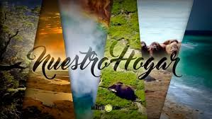

El Día de la Tierra es un día celebrado en muchos países el 22 de abril. Su promotor, el senador estadounidense Gaylord Nelson, instauró este día para crear una conciencia común a los problemas de la superpoblación, la producción de contaminación, la conservación de la biodiversidad y otras preocupaciones ambientales para proteger la Tierra. Es un día para rendir homenaje a nuestro planeta y reconocer a la Tierra como nuestro hogar y nuestra madre, así como lo han expresado distintas culturas a lo largo de la historia, demostrando la interdependencia entre sus ecosistemas y los seres vivos que la habitamos.
El 22 de abril se celebra el Día Mundial de la Tierra. Esta fecha fue elegida porque el 22 de abril de 1970 una manifestación en Estados Unidos para que se creara en el Gobierno una agencia ambiental que trabaje sobre las problemáticas medioambientales.
El impulsor de la protesta fue el senador y activista ambiental Gaylord Nelson, quien convocó a miles de universidades, escuelas primarias y secundarias entre otras comunidades a participar del pedido. Gracias a la expresión social el Ejecutivo estadounidense creó Environmental Protection Agency (Agencia de Protección Ambiental) y varias leyes de protección del medio ambiente.
Dos años después se llevó adelante el encuentro a nivel mundial: Cumbre de la Tierra de Estocolmo.
La intensión es sensibilizar a la humanidad de que es parte del planeta Tierra y sus huellas marcarán el destino del mundo, por eso reducir (el consumo), reciclar y reutilizar objetos es la forma en que cada uno día a día puede colaborar para evitar la contaminación ambiental
biografia Gaylond Nelson
Una de nuestras más grandes responsabilidades es el cuidado del lugar donde vivimos, donde vivirán nuestros hijos y nietos. Trabajemos por esta oportunidad que tenemos y que además nos hace crecer como individuos.
Estas son algunas instrucciones básicas para el cuidado del planeta que podemos seguir y fomentar día a día:
Si reducimos el problema, disminuimos el impacto en el medio ambiente. Los problemas de concienciación, habría que solucionarlos empezando por esta erre. La reducción puede realizarse en 2 niveles: reducción del consumo de bienes o de energía. De hecho, actualmente la producción de energía produce numerosos desechos (desechos nucleares, dióxido de carbono...). El objetivo sería:
Segunda erre más importante, igualmente debido a que también reduce impacto en el medio ambiente, indirectamente. Ésta se basa en reutilizar un objeto para darle una segunda vida útil. Todos los materiales o bienes pueden tener más de una vida útil, bien sea reparándolos para un mismo uso o con imaginación para un uso diferente.
Ejemplos: Utilizar la otra cara de las hojas impresas, rellenar botellas.
Las botellas desechables se pueden convertir en ladrillos ecológicos, si en su interior se les ponen todas las bolsas de plástico que ya no se usan. Las cajitas o frascos de PVC, metal o plástico se pueden pintar o decorar con técnicas de decoupage y utilizarse nuevamente ahora para guardar distintos elementos. El papel usado se puede transformar en pulpa y crear nuevas hojas para escribir.
Ésta es una de las erres más populares debido a que el sistema de consumo actual ha preferido usar envases de materiales reciclables (plásticos y bricks, sobre todo), pero no biodegradables. De esta forma se necesita el empleo en mayor forma personal y energía en el proceso.
Ejemplo: El vidrio y la mayoría de plásticos se pueden reciclar calentándolos hasta que se funden y dándoles una nueva forma. Es como utilizar algo de su principio, aunque la eficiencia no es del cien por cien en general. En el caso del vidrio en concreto, sí es completamente reciclable: de una botella se podría obtener otra botella.
El mundo ha sido testigo de las consecuencias ocasionadas por el maltrato del medio ambiente. La aparición de huracanes, la crecida del mar, el recalentamiento global y las lluvias incontrolables, entre otros, son sólo una faceta de las repercusiones que puede acarrear la falta de cuidado de nuestro hábitat.
El mundo está siendo apaleado por el efecto invernadero (recalentamiento global), que no sólo provoca desórdenes ambientales como los ya mencionados sino que también acrecienta la presencia de enfermedades como el dengue, el paludismo y el hanta virus. Los síntomas del planeta tierra son más que obvios, la reducción de los glaciares de la Patagonia y los Andes, las lluvias más prolongadas, los calores intensos en épocas invernales, las sequías, son sólo el principio.
Se pronostica que al final de este siglo, el calentamiento global ascenderá entre 1.5 y 3 grados, sólo si los países más generadores de “gases de efecto invernadero” reducen la emisión de gases. Además, que todos los países comiencen a regular la eficiencia energética, ahorrar energía, cuidar los bosques, entre muchas otras opciones. Todo esto con el fin de lograr un objetivo que puede sonar trillado “lograr de este, un mundo mejor”.
Tenemos que proteger el medio ambiente, eso está claro. Sin embargo, muchas veces tomamos la iniciativa, nos lo proponemos, estamos listos para comenzar… pero cuando lo vamos a hacer nos preguntamos ¿y cómo hago paracuidar al medio ambiente?
Tenemos muchas formas de cuidar al medio ambiente, pero hoy comenzaremos por conocer a aquellas que podemos realizar desde casa, cambiando algunos hábitos en nuestros hogares.Por ejemplo, algunos de los hábitos de los que halamos son los que tienen que ver con el momento de realizar las compras y elegir los productos alimenticios.
•Comprar preferentemente productos con envases de amplia capacidad y reutilizables.
•Intentar llevar nuestras propias bolsas para la compra.
•Los alimentos de granel son una gran elección.
•Debemos procurar conservar los alimentos en recipientes duraderos, evitando utilizar en exceso el papel de aluminio.
•Evitar comprar productos con envoltorios superfluos.
En otro de los momentos que podemos aprovechar para cuidar el medio ambiente es al momento de tirar la basura.
•Separar los materiales de la basura: Utilizar bolsas diferentes para basura orgánica, papel y el cartón, envases de vidrio y envases de brik, plástico y latas.
•Tirar cada una de esas bolsas en los contenedores dispuestos a cada uno de ellos.
•No tirar nunca los vasos de cristal y las bombillas con el resto de los vidrios de los embases ya que no pueden reciclarse conjuntamente.
•Estemos atentos de quitar los tapones y los objetos que tengan en su interior las botellas de vidrio.
Además podemos:
•Tratar de consumir menos papel, o intentar utilizar más papel reciclable.
•Enviar a reciclar la máxima cantidad de papel posible.
•Evitar utilizar, en la medida de lo posible, artículos desechables, ya que la industria de productos de usar y tirar es la que genera más basura en todo el mundo.
•Intentar utilizar pilas recargables o pilas verdes no contaminantes en lugar de las comunes.
El cambio climático es un cambio en la distribución estadística de los patrones meteorológicos durante un periodo prolongado de tiempo (décadas a millones de años). Puede referirse a un cambio en las condiciones promedio del tiempo o en la variación temporal meteorológica de las condiciones promedio a largo plazo (más o menos fenómenos meteorológicos extremos). Está causado por factores como procesos bióticos, variaciones en la radiación solar recibida por la Tierra, tectónica de placas y erupciones volcánicas. También se han identificado ciertas actividades humanas como causas significativas del cambio de clima reciente, a menudo llamado calentamiento global.
Los científicos trabajan activamente para entender el clima pasado y futuro mediante observaciones y modelos teóricos. Se ha recopilado un registro climático, que se extiende profundamente en el pasado de la Tierra y continúa construyéndose, basado en la evidencia geológica a partir de perfiles térmicos de perforaciones, núcleos removidos de profundas acumulaciones de hielo, registro de la flora y fauna, procesos glaciares y periglaciares, isótopos estables y otros análisis de las capas de sedimento y registros de los niveles del mar del pasado. El registro instrumental provee de datos más recientes. Los modelos de circulación general, sustentados por las ciencias físicas, se usan a menudo en los enfoques teóricos para corresponder a los datos del clima pasado, realizar proyecciones futuras y asociar las causas y efectos del cambio climático.
Uno de los problemas que nos amenaza hoy en día a todos los seres humanos del Planeta, es el fenómeno del Cambio Climático Global. Las actividades humanas y nuestro sistema económico (y manera de vivir) estamos produciendo más y más gases que están impactando la atmósfera. Esto está causando que la temperatura promedio del planeta suba teniendo consecuencias desastrosas.3
cuida a tu tierra por que sin ella simplemente nosotros no existiriamos por que la Tierra es nuestro hogar,el nos da todo para que los seres humanos podamos tener lo necesario para sobrevivir y no solo lo necesario sino lo muchisimo más que eso,y si acabas con su vida acabas con la tuya